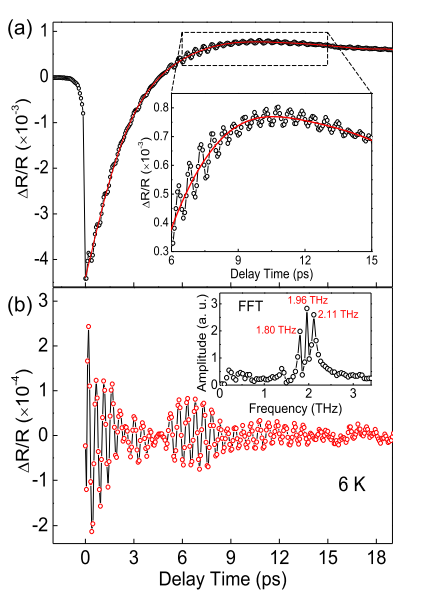
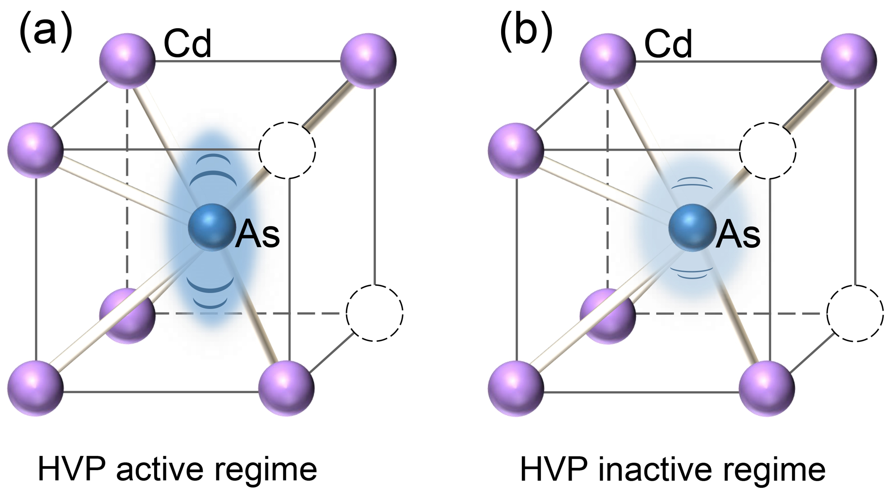

拓扑量子材料
利用超快光谱学方法研究拓扑量子态和拓扑量子材料是我们研究的另一个主要的领域。最近，我们报道了Dirac型拓扑半金属Cd3As2中的晶格超快动力学行为。在我们利用800 nm中心波长，250 kHz重复频率的超快光谱pump-probe实验中，清晰地观测到三个频率等间距的A1g相干态声子模式形成的声子拍频（其振动频率分别为1.80 THz，1.96 THz和2.11 THz）。在这三支声子模式中，两个side mode来源于Cd3As2晶格中由Cd原子空位形成的两种相反螺旋形堆叠结构，我们称之为helix vacancy-induced phonon (HVP) modes。值得一提的是，在我们进行的温度依赖的实验中，随着温度的增加（从液氦温度到室温），两支HVP模式与主峰的衰减速度明显不同，尤其是在200 K以上两支HVP模式几乎消失。HVP模式的存在与否很好的定义了两个温度区间（200 K上、下），在这两个温度区间晶格动力学行为存在着明显的区别，揭示了可能存在一个晶格自由度的相变。重要的是：HVP模式在高温区的消失可能意味着Cd3As2的拓扑性质也会随之改变，一些在理论预言的0 K才具有的拓扑属性在200 K以上未必仍然存在。我们的超快光谱实验证明了温度（晶格自由度）对量子材料的拓扑属性具有重要的影响，有必要在实验上核实和验证。

图一. 6 K温度下，相干态声子拍频现象。

图二. 三支相干态声子的不同动力学行为。
图三. 两个温度区间内声子模式的示意图。
该工作受到了国家重点研发计划 (2016YFA0300300，2016YFA0401000)；国家重点基础研究发展计划(973)项目(2015CB921301)；国家自然科学基金 (11574383, 11274372, 11274362, 11474330, 11674371)；中科院创新交叉团队；中国科学院对外合作重点项目 (GJHZ1403)等经费的支持。相关研究结果发表在Phys. Rev. B, 2017, 95, 235108。 Ref: Fei Sun et al, Coherent helix vacancy phonon and its ultrafast dynamics waning in topological Dirac semimetal Cd3As2, Phys. Rev. B, 2017, 95, 235108.